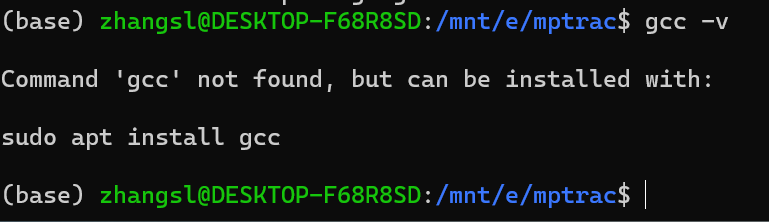
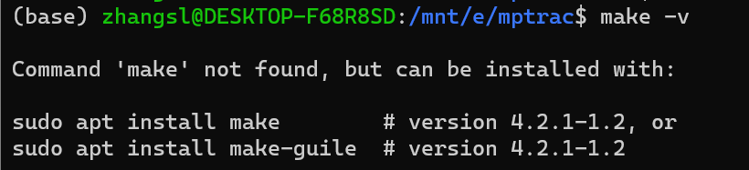
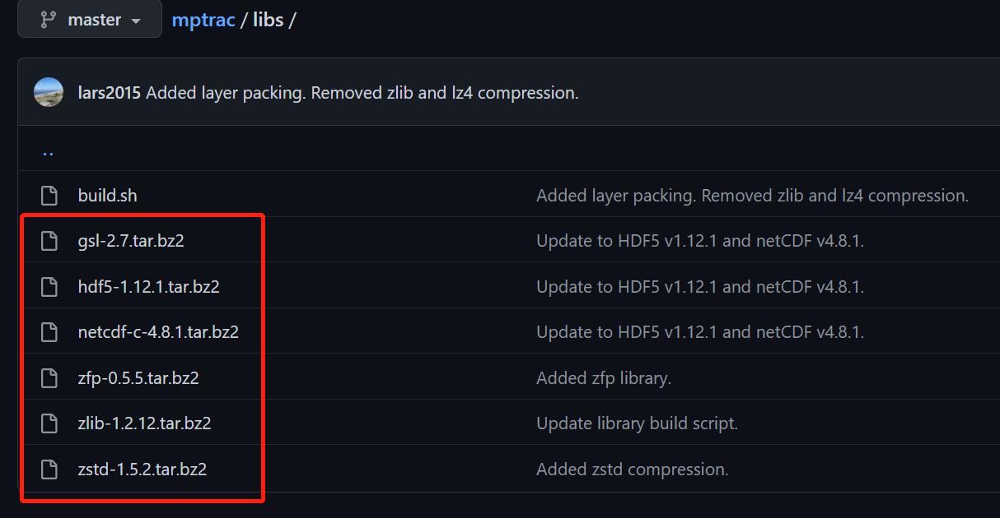

这里主要记录了安装 MPTRAC 模型的过程（安装过程非常坎坷╯︿╰），需要注意的是 MPTRAC 的版本更新过程非常快，故记录在此的安装经验未必适用现在（第一次安装是在 20222 年 1 月，将近一周才安装成功；第二次更新 MPTRAC 是在 2022 年 8 月）
# Massive-Parallel Trajectory Calculations (MPTRAC)
# 1.introduction
Massive-Parallel Trajectory Calculations (MPTRAC) 是一种拉格朗日粒子扩散模型，用于分析对流层和平流层中的大气传输过程。
特点：
- MPTRAC 通过使用给定风场求解运动学方程来计算粒子轨迹。
- 使用 Langevin 方程模拟中尺度扩散和次网格尺度风波动，以向轨迹添加随机扰动。
- 附加模块用于模拟对流、沉降、放射性衰变、羟基化学、干沉降和湿沉降。
- 具有粒子、集合、网格、样本和站点数据的各种输出方法； 用于直接可视化的 Gnuplot 界面
- MPTRAC 具有 MPI/OpenMP/OpenACC 混合并行化功能，可在 HPC 和 GPU 系统上高效使用。
# 2.Git 命令
这一步主要是为了接下来安装 MPTRAC 做准备，使用 git 命令把安装包 pull 到本地；如果已安装 git，可忽略这一步。
通过 win10+wsl+conda 安装的方式，git 已经安装好了，可以在 conda 环境下，输入 git --version 命令检查一下版本。
下面两行参数设置，就唯一标识了你自己，你在 Git 上所有的活动都会跟这两个参数相关联。这两条命令仅需要运行一次，后续就不再需要运行了。 global 这个参数是全局生效的，即所有项目都会用后面的 user.name 和 user.email ，如果把 global 参数去掉，那么就可以对不同的项目用不同的 user.name 和 user.email。参考 Git 版本控制
$ git config --global user.name <yourname> | |
$ git config --global user.email <youremail> |
# 3.Prerequisites
本文档描述了在 Linux 系统上安装 MPTRAC。安装 MPTRAC 需要许多标准工具（ gcc、git、make ）和软件库。数值计算需要 GNU Scientific Library ，文件输入输出需要 Unidata netCDF library 。 MPTRAC git repository 中提供了这些库的副本。(以上是 2022年1月 官网上要求的 prerequistes，下图是 2022年8月 官网更新的 prerequisites)
可以看到两次要求的依赖包是不同，但在第一次安装时， gcc、git、make 这三个软件一个都不可以少，少了就安装不了。
# 4.Installation
下面通过wsl在本地E盘mptrac目录进行下载
# 1. 下载和更新
从 git repository（git 存储库）下载 MPTRAC 源代码，并更新
$ git clone https://github.com/slcs-jsc/mptrac.git # download the MPTRAC source code from the git repository | |
$ git pull https://github.com/slcs-jsc/mptrac.git #To update an existing installation |
# 2. 编译 (2022.01)
通过运行构建脚本来编译 MPTRAC 所需的 GSL 和 netCDF 库（ 2022年8月 此段改成 Several libraries provided along with MPTRAC can be compiled and installed by running the build script）
$ cd mptrac/libs | |
$ ./build.sh nc4 |
2022 年 8 月更新后，好像不会出现下面的问题，因为相关的库包作者都已经上传到 git repository，在安装时会自动下载到本地。若仍然编译不成功，可看接下来的前两部分 (a) gcc, (b) make 和 编译(2022.08) 。第三部分 (c) 环境 当时解决的时候太混乱了，未找到具体原因，因此写的也很不清楚，不建议看。
注意： 2022年1月 编译文件的命令是 ./build.sh <nc2|nc4>
若使用 netCDF 经典格式的气象数据文件，选择 nc2，若希望同时使用 netCDF classic 和 netCDF-4，选择 nc4。netCDF-4 需要编译 HDF5 和 zlib 库。
而 2022年8月 仅是 ./build.sh ，这是因为 HDF5,zlib 库本身被作者 Lars 放在 git repository 中了，在安装时（git clone）就会从 git repository 下载到本地了。
编译时出现这个问题，说明 gcc 和 make 可能没有安装。
# (a) gcc
查看 gcc 版本： gcc -v

上图说明没有 gcc，使用命令： sudo apt install gcc （若是不成功，先升级镜像源： sudo apt-get update ）成功后再查看 gcc 版本
然后 sudo apt instsll libgcc-9-dev

上面说明安装成功，然后用如下命令 sudo apt install gsl-bin libgsl-dev
再： sudo apt install netcdf-bin libnetcdf-dev libnetcdff-dev
# (b) make
查看 make 版本： make -v

安装： sudo apt install make
再： sudo apt install libnetcdf-c++4-dev
./build.sh 不成功：若安装了最新的 MPTRAC 且安装了上面相关的库后编译仍不成功，先看 “编译（2022.08）”，最后再看 © 环境：
# (c) 环境（可不看）
这一部分当时未找到具体原因，解决的很混乱，写的也很混乱
以上依赖库成功后，编译 ./build.sh nc4 仍然出错：
（1）此步骤未解决
出现原因：cpp 在编译 hdf5 时出错，hdf5 在编译时会创建一个环境，默认 cpp 在 /lib 目录下 ( /lib/cpp )，而实际 cpp 在 /usr/bin/cpp （通过 which cpp 命令可以看到），所以在运行 buld.sh 前（./build.sh），需要先编辑 build.sh（ vi build.sh ），在 hdf5 的配置文件中增加环境变量 CPP（ CPP=/usr/bin/cpp ）
（for some reason the hdf5 installation or configuration tries to use /lib/cpp, the problem is that the hdf5 assumes a strange build environment, in which cpp is in /lib rather than in /usr/bin, you need to tell it that it’s in /usr/bin, you can do this by passing the environment variable CPP to the configure script for hdf5, so all you need to do is edit the file build.sh and add CPP=/usr/bin/cpp before ./configure in the section that deals with hdf5）
若没有上面这一步直接进入下一步（./build.sh nc4）会安装失败
which cpp
（2）新方法
sudo apt install g++ （会创建一个符号链接 g++ -> g++-9 ）
查看是否安装成功： which g++
（如果不行，那么再安装 g+±9， sudo apt install g++-9 ）
查看 ls -l /usr/bin/g++*
定义环境变量（直接在命令行中输入，只输入一个好像不行）
$ export CC='gcc' | |
$ export CPP='gcc -E' | |
$ export CXXCPP='g++ -E' | |
$ ./build.sh nc4 （cd mptrac/libs） |
以上是用 原始的buid.sh 文件，如果编辑 build.sh，则不需要再命令行中定义环境变量了（注意直接 vi build.sh 看到的内容与直接打开看到的不一样）
按照这个方法就可以编译成功了！
# 3. 编译 (2022.08)
下面通过 wsl 在本地 E 盘 mptrac 目录进行下载（ base环境 ，不是 py38 环境）
$ git pull https://github.com/slcs-jsc/mptrac.git # update | |
$ cd mptrac/libs | |
$ ./build.sh # compile |
# （a）git pull 不完整
首先更新已安装的包，然后编译，但编译出错，显示没有 gsl-2.7 这个库。
虽然在 2022.01 时已经通过 sudo apt install gsl-bin libgsl-dev 这个命令安装了 gsl 库（之后又安装了一遍，显示已安装），但在编译时 ./build.sh 仍然如上图报错，显示没有这个 gsl-2.7 库。这是因为安装的和 MPTRAC 想要的不是一个。
编译报错的实际原因： 有些包在git pull的时候没有成功复制到本地 。在更新时（ git clone/pull ）只把官网 mptrac/libs 目录下面的 6 个压缩包 pull 到本地 mptrac/libs 目录下 3 个压缩包
正常更新成功的在 mptrac/libs 下面应该有 6个 压缩包，然后通过命令 ./build.sh ，把对应的包解压到 mptrac/libs/build/src 下面
解决办法：从官网下载缺少的压缩包到 /mptrac/libs 下面，然后 ./build.sh

# (b) zstd 包有问题
下载完安装包后 ./build.sh ，但仍然出错
问题：zstd 安装包有问题
解决办法：在 build.sh 里面把 zstd 的 make check 命令删掉，然后再 ./build.sh
注意：每次 ./build.sh 之前需要把之前失败的清空，防止出问题，命令： rm -rf build/
这一次 build 会花很长时间，然后出现如下结果
这说明 those are variables you can use in the makefile；it means the libraries built without errors
# 4. 编辑 Makefile 文件
$ cd mptrac/src | |
$ vi Makefile |
如果需要使用并行运算或者动态 gsl, netcdf 库的话，需要编辑 Makefile 文件（ 把MPI开关打开，取消static开关等 ），如果对 Makefile 进行了编辑，需要 “make” 一下，重新编译配置文件代码。
如果不需要编辑配置文件 Makefile，那么这一步就可略过。（注意因为没有 emacs 命令，所以使用 vim 命令（二者作用相同））
最后编译 code： make ；再 run 例子检查是否安装成功： make check
# reference
(1) MPTRAC
(2) Git 版本控制